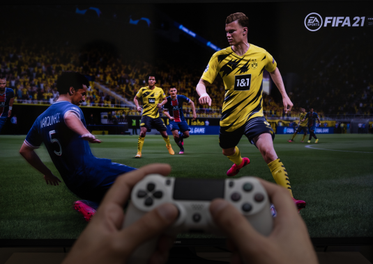

Intressen
Jag har allitd gillat att fiska. Jag har ett landställe på Furusund, som är en ö i Stockholms skärgård. Om det inte vore för Furusund så hade jag inte börjat fiska. Jag började fiska när jag var typ 5 år. Jag föredrar att fiska abborar framför gäddor. Jag brukar fiska under sommarn och på höstlovet.
Fotboll är enligt mig den bästa sporten någonsin. Jag har alltid gillat att spela, kolla och gejma fotboll. Jag har minst 10st olika FIFA spel och jag har gillat att spela varenda en av dem och det är alltid roligt att köra mot vänner. Jag hejar på svenska laget Djugården och engelska laget Liverpool. Jag spelade fotboll för några år men sen slutade jag och började gymma istället.
I början av 2024 så var min dator extremt trög och dålig så jag ville skaffa en ny, och då tänkte jag för att spara pengar så kunde jag bygga min egen. Så då började jag lära mig om datorkomponenter och hur man bygger en dator och på sommaren så byggde jag min dator